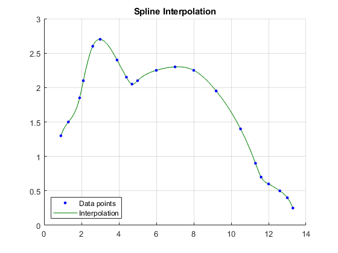
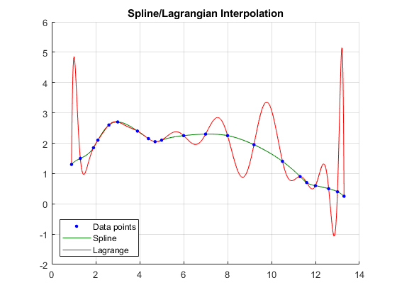
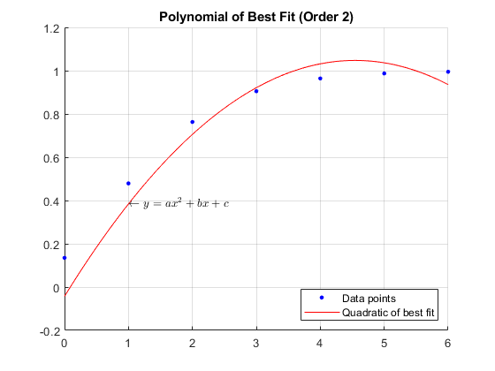

Contents
Copyright
close all; format compact; clc;
fprintf("Engineer: Rodrigo Becerril Ferreyra\n");
fprintf("Company: California State University, Long Beach\n");
fprintf("Project Name: Task 5.2\n");
fprintf("Date: 20 October 2020\n");
Engineer: Rodrigo Becerril Ferreyra
Company: California State University, Long Beach
Project Name: Task 5.2
Date: 20 October 2020
Problem 1
fprintf("\nProblem 1\n");
clear variables;
x = [0.9, 1.3, 1.9, 2.1, 2.6, 3.0, 3.9, 4.4, 4.7, 5.0, 6.0, 7.0, 8.0, 9.2, 10.5, 11.3, 11.6, 12.0, 12.6 13.0, 13.3];
y = [1.3, 1.5, 1.85, 2.1, 2.6, 2.7, 2.4, 2.15, 2.05, 2.1, 2.25, 2.3, 2.25, 1.95, 1.4, 0.9, 0.7, 0.6, 0.5, 0.4, 0.25];
z = linspace(x(1), x(end), 1001);
spl = spline(x, y);
figure(); hold on;
interpol = plot(z, ppval(spl, z), "Color", [0 0.5 0]);
points = plot(x, y, 'b.', "Markersize", 10);
grid on;
legend([points, interpol], ["Data points", "Interpolation"], "Location", "southwest");
title("Spline Interpolation");
hold off;
fprintf("%2s\t%4s\t%4s\t%6s\t%6s\t%6s\t%6s\n", "#", "x", "y", "a", "b", "c", "d");
fprintf("%2d\t%4.2f\t%4.2f\t%6s\t%6s\t%6s\t%6s\n", 1, x(1), y(1), "N/A", "N/A", "N/A", "N/A");
for i = 2:(length(x)-1)
a = spl.coefs(i, 1); b = spl.coefs(i, 2); c = spl.coefs(i, 3); d = spl.coefs(i, 4);
fprintf("%2d\t%4.2f\t%4.2f\t%6.3f\t%6.3f\t%6.3f\t%6.3f\n", i, x(i), y(i), a, b, c, d);
end
Problem 1
# x y a b c d
1 0.90 1.30 N/A N/A N/A N/A
2 1.30 1.50 0.773 -0.071 0.348 1.500
3 1.90 1.85 -2.789 1.321 1.097 1.850
4 2.10 2.10 -0.458 -0.353 1.291 2.100
5 2.60 2.60 0.449 -1.040 0.594 2.600
6 3.00 2.70 0.174 -0.502 -0.023 2.700
7 3.90 2.40 0.078 -0.032 -0.503 2.400
8 4.40 2.15 1.314 0.085 -0.477 2.150
9 4.70 2.05 -1.581 1.268 -0.071 2.050
10 5.00 2.10 0.043 -0.155 0.262 2.100
11 6.00 2.25 -0.005 -0.026 0.081 2.250
12 7.00 2.30 -0.024 -0.040 0.015 2.300
13 8.00 2.25 0.017 -0.113 -0.139 2.250
14 9.20 1.95 -0.013 -0.051 -0.336 1.950
15 10.50 1.40 -0.020 -0.100 -0.532 1.400
16 11.30 0.90 1.209 -0.149 -0.731 0.900
17 11.60 0.70 -0.828 0.940 -0.494 0.700
18 12.00 0.60 0.012 -0.054 -0.139 0.600
19 12.60 0.50 -0.296 -0.032 -0.190 0.500
20 13.00 0.40 -0.296 -0.387 -0.357 0.400

Problem 2
fprintf("\nProblem 2\n");
clear a b c d i interpol points;
f_z = zeros(1, length(z));
ip = 1:length(x);
for index = 1:length(z)
for i = ip
j = find(ip~=i);
product = y(ip(i));
for k = j
product = product * (z(index) - x(ip(k)))/(x(ip(i)) - x(ip(k)));
end
f_z(index) = f_z(index) + product;
end
end
figure(); hold on;
interpol = plot(z, ppval(spl, z), "Color", [0 0.5 0]);
lagrange = plot(z, f_z, "r-");
points = plot(x, y, 'b.', "Markersize", 10);
grid on;
legend([points, interpol, lagrange], ["Data points", "Spline", "Lagrange"], "Location", "southwest");
title("Spline/Lagrangian Interpolation");
hold off;
Problem 2

Problem 3
fprintf("\nProblem 3\n");
clear variables;
x = 0:6;
y = [0.135, 0.479, 0.763, 0.905, 0.964, 0.987, 0.995];
A = [2*sum(x.^4), 2*sum(x.^3), 2*sum(x.^2); 2*sum(x.^3), 2*sum(x.^2), 2*sum(x); 2*sum(x.^2), 2*sum(x), 2];
b = [2*sum((x.^2) .* y); 2*sum(x.*y); 2*sum(y)];
temp = A \ b; a = temp(1); b = temp(2); c = temp(3); clear temp;
fprintf("a = %f\n", a);
fprintf("b = %f\n", b);
fprintf("c = %f\n", c);
figure(); hold on;
domain = linspace(0, 6, 100);
f = @(x) a.*x.^2 + b.*x + c;
line = plot(domain, f(domain), 'r-');
points = plot(x, y, 'b.', "Markersize", 10);
grid on;
legend([points, line], ["Data points", "Quadratic of best fit"], "Location", "southeast");
title("Polynomial of Best Fit (Order 2)");
text(1, f(1), "$$\leftarrow y = ax^2 + bx + c$$", "Interpreter", "latex");
hold off;
TSE = sum((f(x) - y).^2);
fprintf("TSE = %f\n", TSE);
Problem 3
a = -0.052760
b = 0.479610
c = -0.042693
TSE = 0.054675

Problem 4
fprintf("\nProblem 4\n");
clear variables;
A = [1, 3, -4; 2, -2, 1]; B = [3, -2; -1, 4; -2, 5];
r = sum(sum(A*B));
fprintf("(a) %f\n", r);
A = [2, 3, 5; 4, -2, -1; 0, 4, 2]; B = [1 2 4; -3 2 0; 5 4 5; 1 5 -2];
r = sum(B*A);
fprintf("(b) %f\n", r(2));
v = 1:2:5; w = 3:-2:-1;
A = [v-w; w.^2 - v.^-1; w.^v - v.^w];
fprintf("(c) ["); fprintf("%f ", A(2, :)); fprintf("]\n");
A = [1 2 3; 4 5 6; 7 8 9];
v = diag(A, 0);
fprintf("(d) ["); fprintf("%f ", v); fprintf("]'\n");
k = 1:3; A = [k; k.^2; k.^3]; B = A.^-1/A;
r = sum(diag(B));
fprintf("(e) %f\n", r);
B = [1 2 3; 5 4 1; -3 6 2];
s = sum(diag(B(1:3, 3:-1:1)));
fprintf("(f) %f\n", s);
k = 1:16; A = k'*k; B = A.^1.5./(A.^2 - 99);
r = sum(diag(B)) + sum(diag(B(1:16, 16:-1:1)));
fprintf("(g) %f\n", r);
A = [1 2 3; 4 6 5; 3 -1 2]; B = [3 2; 2 1; 1 -1];
C = 2*B'*A + 2*(A*B)' - 3*(A'*B)';
fprintf("(h)\n"); disp(C); fprintf("\n");
r = roots([1, -2, 1]);
fprintf("(i) %f\n", r(1));
a = 1:2; b = 2:-1:1;
A = [1 -2 3; 3 -4 1; 6 -2 3];
reverseA = A(:, end:-1:1);
s = sum(diag(reverseA, -1)) + sum(diag(reverseA, 1));
fprintf("(j) %f\n", s);
k = 1:10; A = k'*((k-pi)./(k+pi));
reverseA = A(:, end:-1:1);
s = sum(diag(reverseA, -8)) + sum(diag(reverseA, -6)) + sum(diag(reverseA, -4)) + sum(diag(reverseA, -2)) + sum(diag(reverseA, 0)) + sum(diag(reverseA, 2)) + sum(diag(reverseA, 4)) + sum(diag(reverseA, 6)) + sum(diag(reverseA, 8));
fprintf("(k) %f\n", s);
Problem 4
(a) -3.000000
(b) 14.000000
(c) [8.000000 0.666667 0.800000 ]
(d) [1.000000 5.000000 9.000000 ]'
(e) 0.749228
(f) 4.000000
(g) 3.005601
(h)
6 41 -3
-1 7 -3
(i) 1.000000
(j) 0.000000
(k) 45.752071